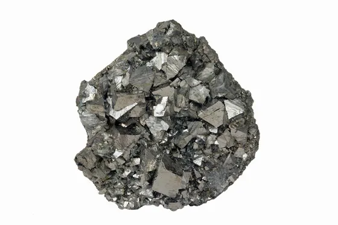

Mineral Grimoire
 Arsenopyrite
Arsenopyrite
Appearance
Metallic opaque stone
Origin
Portugal, Germany, Czech Republic, Bolivia, Russia, Canada, United States, Peru, Chile, France, Sweden, China
Attributes
Arsenopyrite is an Arsenic Sulphide. Under the principle of like heals like, it draws toxicity or blockages out of the body or environment. Useful when you have done all you can to overcome a dis-ease, especially if underlying fears keep you mired in the situation, it overcomes fear of death. A conductive stone, Arsenopyrite facilitates telepathy and tuning into collective thought.
Healing
Arsenopyrite is reputed to dissolve blood clots and disperse fungal infections.
Position
Place, position or grid as appropriate. CAUTION: Wash hands thoroughly after use. Make essence by the indirect method only, do not take internally.